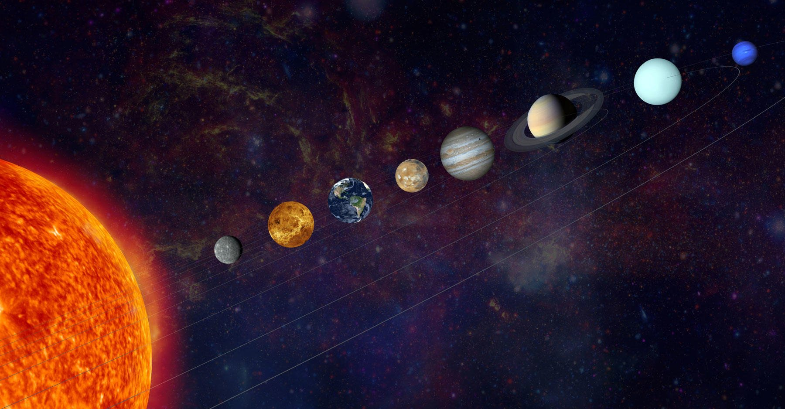
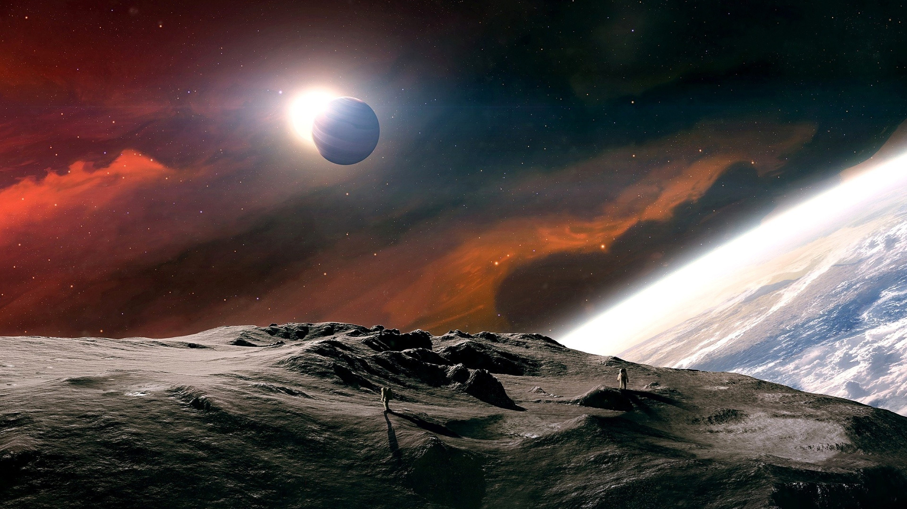
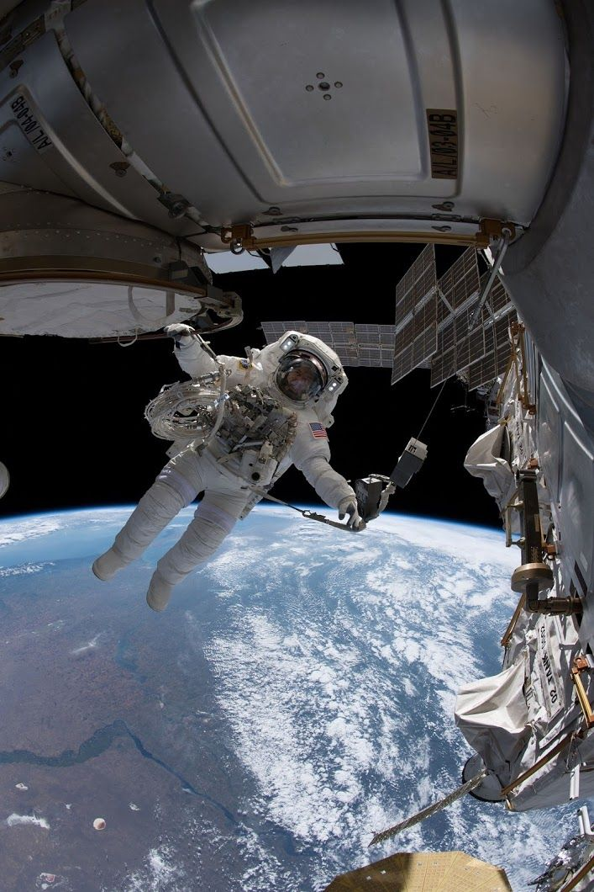

<!DOCTYPE html>
<html lang="en">
<head>
    <meta charset="UTF-8">
    <meta http-equiv="X-UA-Compatible" content="IE=edge">
    <meta name="viewport" content="width=device-width, initial-scale=1.0">
   <link rel="stylesheet" href="style.css">
    <title>Чудесный космос</title>
<body>
    
</body>
</html>


</head>
<body>
<section class="sec1">
    <!-- Меню навигации -->
    <nav>
        <li><a href="index.html">Наша всленная</a></li>
        <li><a href="./3.html">Чудесный космос</a></li>
        <li><a href="./2.html">Регистрация</a></li>
       
    </nav>
</section>
<section>
    <!-- Подложка -->
    <div class="podl">
    </div>
    
    <div class="left">
        <h1>Космос наше все:<br>
            факты и исследования</h1>
            <h3>В понятие "космос" сначала включали не только мир небесных светил, но и всё, с чем мы сталкиваемся на поверхности Земли. Чаще под космосом понимают Вселенную, рассматриваемую как нечто единое, подчиняющееся общим законам. Отсюда происходит название космологии - науки, пытающейся найти законы строения и развития Вселенной как целого</h3>
    </div>
    <!-- Синий блок -->
    <div class="blue">
    </div>
    <!-- Блок с текстом -->
    <div class="tex">
        <h4>Космос – это почти идеальный вакуум, безвоздушное пространство. Космос – это не пустота: он пронизан различными излучениями, а также содержит частицы газа, пыли и другой материи..</h4>
        <h4>В современном мире за космос принимают бескрайнее пространство, начинающееся сразу после атмосферы Земли. В нем находятся планеты, звезды, галактики и другие небесные объекты. Для большего удобства космос разделяют на ближний, который можно исследовать с помощью современных спутников и аппаратов, и дальний, добраться до которого пока невозможно..</h4>
    </div>
</section>
<section class="black">
    <div class="disp2">
    <div class="zalog">
    <h1>Познание космоса даёт нам понятие о всём мире и его границах.</h1>
    
    </div>
    <div class="ved">
        <h2>Введение</h2>
        <p>Космос — это почти идеальный вакуум, практически лишенный материи и с чрезвычайно низким давлением. В космосе не распространяются звуковые волны, потому что пространство слишком разреженное и столкновения молекул, благодаря которым передается звук, случаются крайне редко. Плотные облака газа и пыли со звездами и планетами внутри перемежаются в космосе с совершенно лишенными вещества областями..</p>
            <p> В Греции понимали под словом "космос" Мироздание, рассматривая его как упорядоченную гармоничную систему. Космосу противопоставлялся беспорядок, хаос. Для древних греков понятия порядка и красоты в явлениях природы были тесно связаны. Эта точка зрения держалась в философии и науке долго; недаром даже Коперник считал, что орбиты планет должны быть окружностями лишь потому, что окружность красивее эллипса..</p>
            <p>Никто точно не знает, насколько велик космос. Это трудно определить при помощи существующих приборов.</p>
            <p>Большая проблема исследования космоса — радиация. Без атмосферы и магнитного поля Земли, вас ждет космическая радиация, и это смертельно. Помимо рака, она может также вызвать катаракту и возможно болезнь Альцгеймера.
                </p>
    </div>
</div>
</section>
<section class="blue1">
    <h1>Факты о космосе</h1>
    <h4>Непревлекательное ближайшее окружение планеты земля. 
        Специалисты выделяют главные и интересные факты о космосе:</h4>
    <div>
        <ul class="prem">
        <li>Только Меркурий и Венера во всей солнечной системе не имеет собственной Луны</li>
        <li>Если звезда будет пролетать близко с черной дырой ее может разорвать на части.</li>
        <li> Самая горячая планета в солнечной системе это Венера. </li>
        <li>Возраст нашей солнечной около 4 миллиарда 570 миллионов лет.</li>
        <li>Самая высокая гора обнаружена на Марсе</li>
    </ul>
    </div>
    <h1>Астрономия</h1>
    <h4>Любому из нас известно, что Космос – это область, которая находится за пределами земной атмосферы. Она включает планеты, галактики, солнечные системы, звёзды, астероиды и прочее.</h4>
    <h4>Вот основные познания о космосе которые должен знать каждый:</h4>
    <ol>
        <li>На Марсе – синий закат, по Юпитеру, Сатурну, Урану и Нептуну не пройдет никто, а до Плутона, который могут объявить двойной планетой, нам лететь 800 лет.</li><br>
        <li>Солнце может вместить внутрь один миллион таких планет как Земля. Кроме того, когда Солнце было маленькой звездой, оно горело не так ярко как сегодня. Земля еще не превратилась в нагревающуюся сковороду благодаря наличию флоры, фауны, океана и атмосферы.</li><br>
        <li>Каллорийность суточного рациона не должна превышать норм. Для похудения рекомендуется сократить этот показатель на 500-600 ккал в день. Суточная калорийность 
            рациона у каждого своя и должна рассчитываться индивидуально. В среднем этот показатель для взрослого человека – 2200-2600 ккал.</li>
        <li>Режим питания также имеет огромное значение. Забудьте об объеданиях на ночь или постоянных перекусах в виде гамбургеров и бутербродов. 
            Начните придерживаться режима дня, в котором примерно в одно и то же время у вас завтрак, второй завтрак, обед, полдник и ужин. 
            Причём наиболее калорийную пищу потребляйте на завтрак и обед.</li><br>
        <li>Всю пищу кушайте медленно и тщательно её пережевывайте. Так вы быстрее насытитесь, получите от еды удовольствие, а все полезные вещества лучше усвоятся организмом. 
            НЕ ешьте на бегу. Во время еды выключите телевизор, оторвитесь от компьютера, отложите в сторону телефон.</li><br>
        <li>Готовьте только на 1-2 раза, потребляйте всегда свежие продукты. Лучше несколько раз сходить в магазин или на рынок, 
            чем стараться больше наготовить, а значит, и съесть, чтобы купленные овощи-фрукты не пропали.</li><br>
        <li>Ищите что-то новое, вносите изюминку в привычный рацион. Красиво сервируйте стол, украшайте даже самые простые блюда, делайте так, чтобы еду хотелось съесть, она выглядела аппетитна и аккуратно. Особенно эти правила здорового образа жизни хорошо работают в детском возрасте. 
            Аппетитный омлет в виде смешной рожицы или порция каши, украшенные кусочками мяса с зеленью съедается детьми разного возраста гораздо охотнее, 
            даже если в привычно виде малыш на отрез отказывался есть это блюдо.</li><br>
        <li>Необходимо также следить за сочетаемостью продуктов. Например, два белковых блюда в один приём нельзя есть, 
            так как это ухудшит усваиваемость полезных веществ.</li><br>
    </ol>
</section>
<section class="fourimg">
    <div class="inline">
    <div class="imgone">
        <p>Банальная фраза «движение – жизнь» как нельзя точно отражает тот факт, что без адекватной двигательной активности здоровье и полноценная жизнь не возможны. Сегодня многие страдают от различных заболеваний опорно-двигательного аппарата, наличия лишнего веса и прочих проблем, 
            многие из которых обусловлены как раз недостатком физической активности. Сбалансированное питание и 
            физическая активность – основные компоненты здорового образа жизни.</p>
        
    </div><br><br><br><br>
    <div class="imgtwo">
        
        <p>А ведь на самом деле для поддержания ЗОЖ не требуется изнурительных тренировок (они как раз противопоказаны), многочасовых занятий в спортзале, посещения нескольких спортивных клубов и участия в соревнованиях. Достаточно ежедневно всей семьёй встать 
            раньше на 20 минут, чем вы привыкли, сделать утреннюю гимнастику. 
            А потом в течение рабочего дня отвлекаться от работы и прохаживаться.</p>
    </div><br><br><br><br>
    <div class="imgthree">
        <p>Перед первыми тренировками обязательно проконсультируйтесь со специалистом. Не всегда спорт даже при постепенном повышении нагрузок приносит пользу. Например, людям с больными суставами и позвоночником запрещено прыгать на скакалке и долго бегать, 
            так как это создает дополнительную нагрузку и может привести к осложнениям. Также помните, что на первых порах лучше заниматься с тренером или инструктором. 
            Он поможет избежать травм, подскажет как правильно делать те или иные упражнения.</p>
        
    </div>
</div>
</section>
</body>
<footer>
<section class="sec1">
    <!-- Меню навигации -->
    <nav>
        <li><a href="index.html">Наша вселенная</a></li>
        <li><a href="./3.html">Чудесный космос</a></li>
        <li><a href="./2.html">Авторизация</a></li>
    </nav>
</section>
<a href="./3.html">Вверх</a>
</footer>
</html>